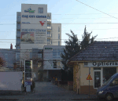

Cabinet Medical de Psihiatrie şi Psihoterapie Dr. Remus Trăistaru
Site-ul are drept scop prezentarea dr. Remus Trăistaru, promovarea cabinetului său individual de psihiatrie-psihoterapie şi informarea vizitatorilor despre tulburările psihice, actul medical psihiatric, psihoterapie, aspecte expertale psihiatrice şi altele.Bine aţi venit
Dr. Trăistaru este un psihiatru tânăr cu o bogată experienţă medicală, didactică şi de voluntariat. A absolvit Facultatea de Medicină "Iuliu Haţieganu" din Cluj-Napoca în anul 1997, psihoterapeut din anul 2002 la Ecole Europeenne de Psychotherapie Socio- et Somato- Analytique Strasbourg-Franta şi medic primar psihiatru din 2009. A absolvit numeroase cursuri postuniversitare în ţară şi în ţările comunitare. A publicat numeroase lucrări ştiinţifice şi cărţi. A participat la numeroase studii de cercetare. În prezent este angajat la Ambulatoriul Spitalului Clinic CFR. Cluj, colaborează cu Policlinica ArtriMed şi are un cabinet medical individual.
Cabinet
 Spaţiul Cabinete Medicale de Psihiatrie Psihoterapie şi Psihologie, precum şi Obstetrică şi Ginecologie este proprietatea Dr. Remus Trăistaru. Acest spaţiu este unul modern şi corespunde celui mai exigent standard medical, găsindu-se situat în Centrul de Afaceri al blocului Cluj City Center, la vreo 70m mai jos de clădirea Tribunalului. În acest Business Center se regăsesc mai multe firme cu activitate în domeniu medical. Accesul la cabinet se poate face direct din parcarea publică subterană unde vă puteţi lăsa maşina pe perioada consultaţiei, luând liftul direct la Etajul II. Persoanele cu dizabilităţi pot folosi rampa sau liftul.
Informaţii

Consultaţiile se efectuează numai cu programare prealabilă. Înainte de a mă contacta vă rog să vizitaţi secţiunea tarife.
Cabinetul Medical Privat Individual de Psihiatrie Psihoterapie şi Psihologie al Dr. Remus Trăistaru nu este în contract cu vreo casa de asigurări de sănătate. Serviciile oferite se plătesc cashCabinetul Medical de Obstetrică şi Ginecologie condus de Dr. Delia Muntean (medic primar) şi Dr. Ana Vlad (medic specialist) funcţionează în acelaşi spaţiu cu Cabinetul Medical de Psihiatrie Psihoterapie şi Psihologie al Dr. TrăistaruDr. Remus Trăistaru
CLUJ CITY CENTER Etaj II Cabinet 204 (ap.67)
Calea Dorobanţilor nr. 14-16
Cluj-Napoca 400117
Tel: 0728-309.318
Fax: 0364-815.329
Mail: contact@psihiexpert.ro